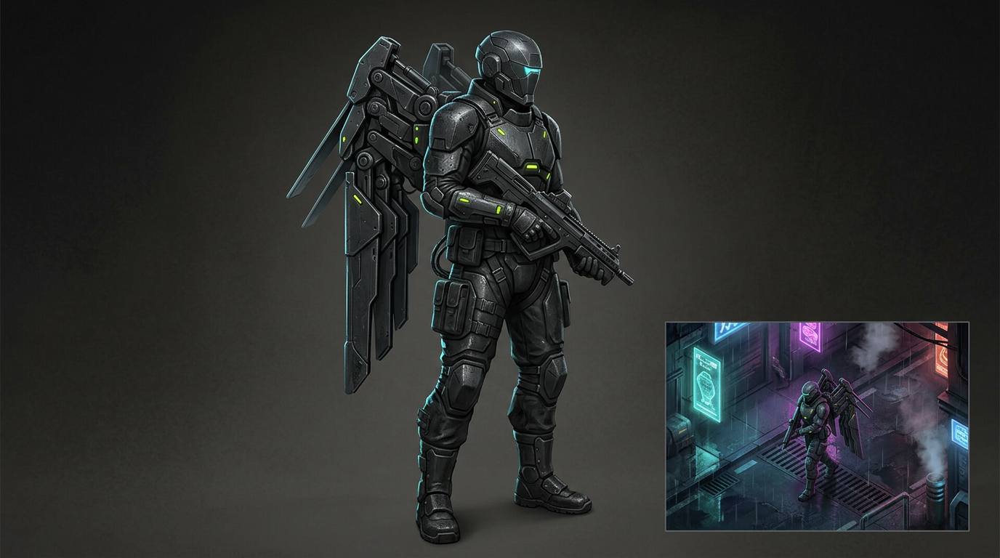
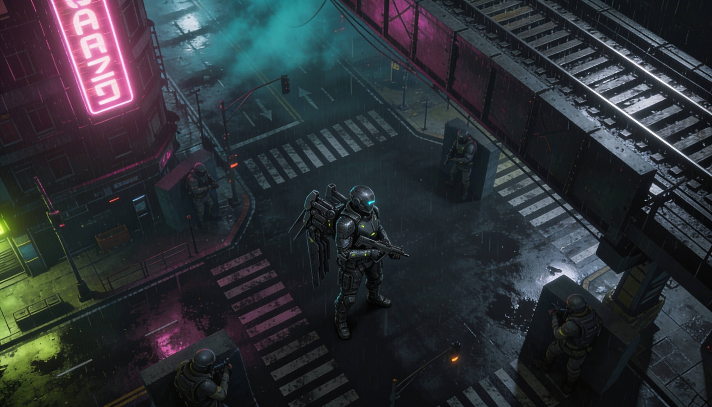
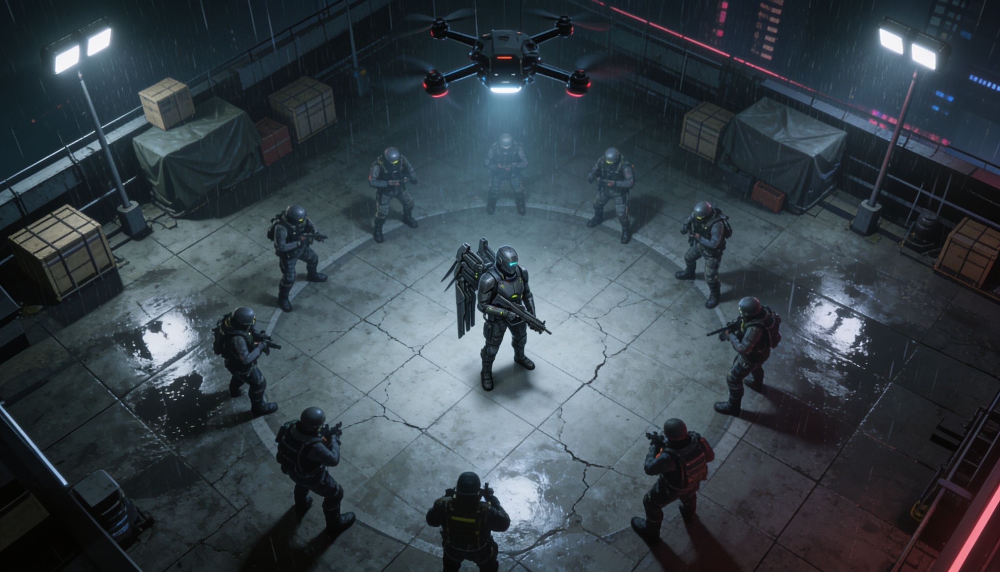
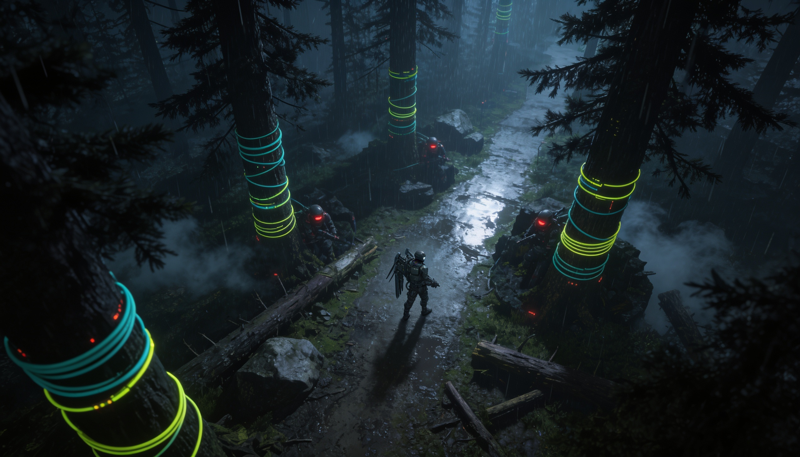

Wing vector
Short burst reposition, cover vault, and finisher entry without turning the player into a glowing fantasy figure.
World premiere trailer / Eidolon Spire is falling
Blackout Protocol
Drop into Eidolon Spire after the grid gods go silent. Command a winged breach rig in a solo and co-op arcade action-shooter RPG built around dense isometric combat.
01 / playable scan
The site switches into the same locked isometric read the game uses: one camera, one centred operator, and a district route that reacts as Seraph crosses hostile lanes.
02 / character spec
The Seraph rig is built for arcade readability from the fixed camera: compact silhouette, hard cyan visor, folded wing vector, and ability glows that only flare when the player commits.

Short burst reposition, cover vault, and finisher entry without turning the player into a glowing fantasy figure.
Raised aim breaks shields and balcony threats; low aim rips through floor mobs and crawling machines.
Moth utility drone marks elites, blinds turrets, opens relay doors, and keeps co-op players readable in chaos.
Emergency lighting changes stealth, enemy aim, and damage windows every few seconds across the arena.
03 / arcology
Eidolon Spire is one vertical city split across four failing systems. The scanner changes objective, threat, and environmental readout without leaving the page.
District 09 / brownout
Worker housing has become a vertical maze of emergency shrines, dead lifts, and drone nests. Keep the lantern relays alive while hostile debt collectors climb from below.
04 / combat loop
Slash through sightlines, vault cover, and redirect incoming fire with a luminous wing-rig built for close tactical violence.
Queue commands while moving: blind turrets, mark elites, drag loot, or stitch a temporary shield around an exposed ally.
Every arena pulses between darkness and emergency light, changing enemy behaviour, stealth routes, and damage windows.
Seraph rig
Short-range crescent blade that stores kinetic charge on perfect dodges.
05 / location plates
The playable route is skinned from the strongest generated plates: city stack, open killbox, black forest, and the grounded Seraph rig. Additional districts remain under blackout until the next transmission clears.



06 / factions
Religious debt syndicate
A lending cult that turns unpaid balances into battlefield hymns. Their agents arrive with gold respirators, choir drones, and contracts printed on human skin.
07 / launch vector
First contact begins with the district playable slice. Join the launch list for access windows, platform dates, and closed breach tests.